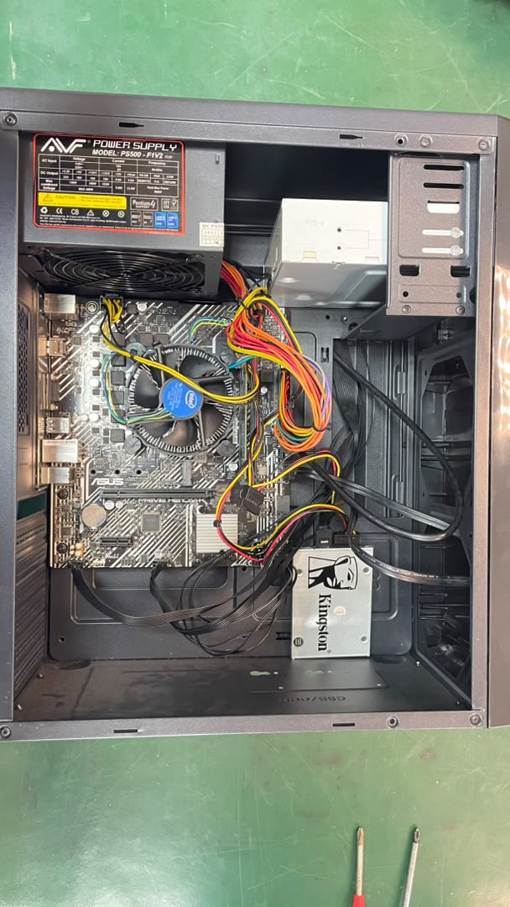

Nama Kelab: Kelab Teknologi Digital
Institusi: Japan Malaysia Technical Institute (JMTI)
Tahun Penubuhan: 2026
Menyediakan ekosistem yang dinamik untuk pelajar mengasah bakat digital, menjalin kerjasama strategik, dan berinovasi dalam landskap teknologi yang sentiasa berubah.
Membentuk bakat digital yang berkemahiran tinggi menerusi pendedahan praktikal selari dengan kehendak industri global.
Membudayakan pemikiran kritis dan kreatif melalui projek eksperimental serta penciptaan solusi digital inovatif.
Membina jaringan sosial yang erat, menggalakkan semangat gotong-royong serta perkongsian ilmu dalam kalangan pelajar.
| ID | Program | Masa | Lokasi |
|---|---|---|---|
| 01 | Bengkel Teardown & Diagnostik Motherboard | Isnin | 15:00 - 17:00 | Cyber Lab 1 |
| 02 | Kelas Front-End Development (UI/UX) | Rabu | 14:30 - 16:30 | Cyber Lab 2 |
| 03 | Simulasi Ethical Hacking & Firewall | Jumaat | 09:00 - 11:00 | Bilik Server Utama |
| 04 | Klinik Pembaikan Komputer Pelajar | Sabtu | 10:00 - 13:00 | Zon Workshop Kelab |
Setiap ahli didedahkan dengan struktur dalaman chassis komputer termasuk pengurusan kabel (cable management) dan penempatan komponen berkuasa tinggi.
